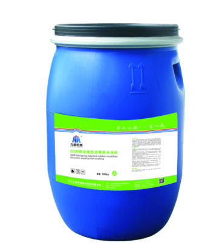

当前位置：
当前位置：
产品概述
DSR-S喷涂橡胶沥青防水涂料用乳化沥青是以沥青、阴离子乳化剂、去离子水为基料，经胶体磨高速研磨乳化后，形成体系相对稳定、高固含量的防水涂料原材料之一。

产品特性
● 喷涂橡胶沥青防水涂料用乳化沥青具有固含量较高、粒径较小、黏度适中的特点。
● 能够与多种橡胶乳液配合、相容性好。
● 对化学破乳剂敏感、凝聚速度快。
● 抗剪切、机械稳定性好，可以满足喷涂橡胶沥青防水涂料生产和施工过程的工艺要求。
● 储存稳定性好，在规定储存温度5-40℃条件下，储存期可达1年以上。
执行标准
Q/LJH0003-2014 喷涂橡胶沥青防水涂料用乳化沥青
| 序号 | 项目 | 指标 | |
|---|---|---|---|
| 1 | 固体含量% | ≥55 | |
| 2 | 耐热度，℃ | 120±2，无流淌、滑动、滴落 | |
| 3 | 不透水性，℃ | 0.3Mpa，30min，不渗水 | |
| 4 | 粘结强度aMpa,≥ | 干燥基面 | 0.40 |
| 潮湿基面 | 0.40 | ||
| 5 | 凝胶时间，s≤ | 5 | |
| 6 | 实干时间，h ≤ | 24 | |
| 7 | 弹性恢复率，% ≥ | 85 | |
| 8 | 吸水性，% ≤ | 2.0 | |
| 9 | 拉伸强度/MPa ≥ | 0.8 | |
| 10 | 断裂伸长率，% ≥ | 标准条件 | 1000 |
| 11 | 低温柔度b，℃ | 标准条件 | -20℃，无裂纹、断裂 |
应用领域
作为原料用于喷涂橡胶沥青防水涂料A组分，可与多种聚合物乳液相容，形成体系相对稳定，无明显分层的喷涂橡胶沥青防水涂料A组分。